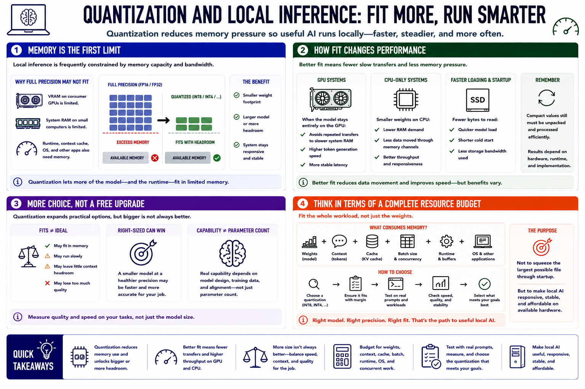

Why Quantization Matters for Local AI
Connecting to LMS... Progress: in progress

Narration
Local inference is frequently constrained by memory capacity and bandwidth. A full-precision language model may exceed the VRAM of a consumer GPU or the system RAM of a small computer. Quantization reduces the weight footprint, allowing a larger parameter count or more operating headroom on the same hardware. That headroom matters because the runtime, context cache, operating system, and other applications also need memory.
Fit changes performance. When a quantized model remains entirely on the GPU, generation can avoid repeated transfers to slower system memory. On CPU-only systems, smaller weights reduce RAM demand and the amount of data moved through memory channels. Loading and startup can improve because fewer bytes are read from storage. These benefits vary with hardware and runtime; compact values still have to be unpacked and processed efficiently.
Quantization expands practical choice, but it does not make every large model sensible. A heavily compressed model may fit while responding slowly, leaving little context headroom, or losing too much task quality. A smaller model at a healthier precision may be faster and more accurate for a specific job. Capability depends on model design and training, not parameter count alone.
Think in terms of a complete resource budget: weights, context, cache, batch, runtime, and concurrent work. Select a quantization that fits with margin and test it on real prompts. The purpose is not to squeeze the largest possible file through startup. It is to make useful local AI responsive, stable, and affordable on available hardware.